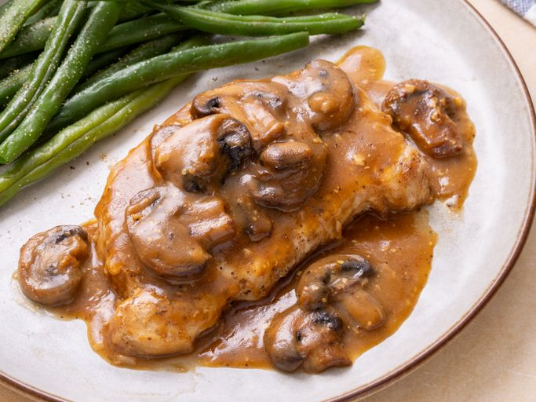

Back
Pork Chops in Garlic Mushroom Sauce

Ingredients
- 2 pounds boneless pork chops
- ½ teaspoon paprika
- kosher salt and ground black pepper to taste
- ¼ cup butter, divided
- 1 (8 ounce) package sliced fresh mushrooms
- 4 cloves garlic, minced
- 1 teaspoon Dijon mustard
- 2 tablespoons all-purpose flour
- 2 cups beef broth
Directions
- Gather all ingredients.
- Ingredients for pork chops with mushroom gravy on marble surface.
-
Season both sides of pork chops with paprika, salt, and pepper.
Seasoned raw pork chops on wooden cutting board with paper towel.
-
Heat a large skillet over medium-high heat; add 2 tablespoons butter. Sear pork chops in melted butter until golden brown and no longer pink in the center, 2 to 4 minutes per side. Remove pork chops from the skillet and set aside on a plate loosely covered with foil.
Seared pork chops in a black frying pan with oil.
-
Melt remaining butter in the same skillet over medium-high heat. Add mushrooms and cook, stirring often, until mushrooms turn golden and excess moisture evaporates, about 5 minutes. Add garlic and mustard; cook until garlic is fragrant, about 1 minute.
Sautéed mushrooms and garlic in a black pan with wooden spoon.
-
Add flour to the skillet, stirring to remove any lumps, until flour is no longer raw. Slowly add beef broth, whisking until incorporated. Season with salt and pepper. Reduce heat to medium and simmer, stirring often, until sauce thickens, about 5 minutes. Check for seasoning again.
Mushroom gravy simmering in a black frying pan.
-
Return pork chops to the skillet and cook until heated through, about 1 minute.
Pork chops simmering in mushroom gravy in a frying pan.
-
Cool the loaves in their pans for 10 minutes. Run a thin knife around the edges, then turn the loaves onto a wire rack to cool completely before slicing or wrapping.
- Serve hot and enjoy!
Nutrition Facts
(per serving)
- 199 Calories
- 13g Fat
- 3g Carbs
- 16g Protein